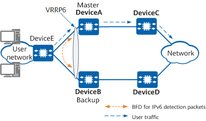
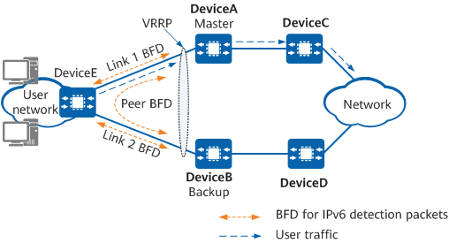
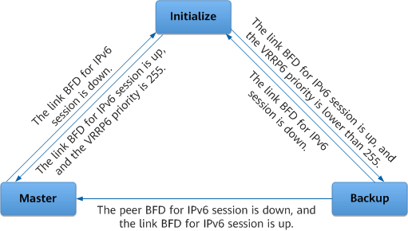

Understanding Association between VRRP6 and BFD for IPv6
Application Scenarios
After a VRRP6 group is configured, VRRP6 devices negotiate the master/backup state through VRRP6 Advertisement packets. If an interface or a link fails, or the network topology changes, devices in the VRRP6 group cannot immediately detect the failure or change. Consequently, the master/backup VRRP switchover is delayed. To resolve this problem, configure VRRP6 association. If an object associated with a VRRP6 group fails, the VRRP6 group is notified and performs a master/backup VRRP switchover. VRRP6 association ensures proper traffic forwarding and improves link reliability.
BFD can rapidly detect link faults. You can associate a VRRP6 group with a BFD for IPv6 session. If a link fault occurs, the BFD for IPv6 session detects the fault, changes the session status, and notifies the VRRP6 group of the fault. This process triggers a rapid master/backup VRRP switchover.
Association Mode |
Application Scenario |
Impact |
Device Requirement |
|---|---|---|---|
Association between a VRRP6 group and a common BFD for IPv6 session |
The backup device monitors the status of the master device in a VRRP6 group. The BFD for IPv6 session monitors the status of the link between the master and backup devices. |
The VRRP6 group adjusts the priority according to the BFD for IPv6 session status and determines whether to perform a master/backup VRRP switchover based on the adjusted priority. |
VRRP6 devices must support BFD for IPv6. |
Association between a VRRP6 group and link and peer BFD sessions for IPv6 |
The master and backup devices monitor the link and peer BFD sessions simultaneously. A link BFD for IPv6 session is established between the master and backup devices; a peer BFD for IPv6 session is established between a downstream device and each VRRP6 device. BFD for IPv6 helps determine whether the fault occurs between the master device and downstream device or between the backup device and downstream device. |
If the link or peer BFD for IPv6 session status changes, BFD for IPv6 notifies the VRRP6 group of the change, and the VRRP6 group immediately performs a master/backup switchover. |
VRRP6 devices and the downstream device must support BFD for IPv6. |
Association Between a VRRP6 Group and a Common BFD for IPv6 Session
In Figure 1, a BFD for IPv6 session is established between DeviceA (master) and DeviceB (backup) and is bound to a VRRP6 group. If BFD for IPv6 detects a fault on the link between DeviceA and DeviceB, BFD for IPv6 notifies DeviceB to increase its priority so that it assumes the master role and forwards service traffic.

VRRP6 device configurations are as follows:
- DeviceA (master) works in delayed preemption mode and its priority is 120.
- DeviceB works in immediate preemption mode and functions as the backup in the VRRP6 group with a priority of 100.
- DeviceB in the VRRP6 group is configured to monitor a common BFD for IPv6 session. If BFD for IPv6 detects a fault and the BFD for IPv6 session goes down, DeviceB increases its priority by 40.
The implementation is as follows:
- Normally, DeviceA periodically sends VRRP6 Advertisement packets to notify DeviceB that it is working properly. DeviceB monitors the status of DeviceA and the BFD for IPv6 session.
- If BFD for IPv6 detects a fault, the BFD for IPv6 session goes down. DeviceB increases its priority to 140 (100 + 40 = 140), making it higher than DeviceA's priority. DeviceB then immediately preempts the master role and sends NA messages to allow DeviceE to update address entries.
The BFD session goes up after the fault is rectified. In this case:
DeviceB restores its priority to 100 (140 – 40 = 100). DeviceB remains in the Master state and continues to send VRRP6 Advertisement packets.
After receiving these packets, DeviceA checks that the priority carried in them is lower than the local priority and preempts the master role after the specified VRRP6 status recovery delay expires. DeviceA then sends VRRP6 Advertisement and NA messages.
After receiving a VRRP6 Advertisement packet that carries a priority higher than the local priority, DeviceB enters the Backup state.
- Both DeviceA and DeviceB are restored to their original statuses. As such, DeviceA forwards user-to-network traffic again.
The preceding process shows that association between VRRP6 and BFD for IPv6 differs from VRRP6. Specifically, after a VRRP6 group is associated with a BFD for IPv6 session and a fault occurs, the backup device immediately preempts the master role by increasing its priority, and it does not wait for a period three times the interval at which VRRP Advertisement packets are sent. This means that a master/backup VRRP switchover can be performed in milliseconds.
Association Between VRRP6 and Link and Peer BFD Sessions for IPv6
In Figure 2, the master and backup devices monitor the status of link and peer BFD sessions for IPv6. The BFD sessions for IPv6 help determine whether a link fault is a local or remote fault.
DeviceA and DeviceB run VRRP. A peer BFD for IPv6 session is established between DeviceA and DeviceB to detect link and device faults. A link BFD for IPv6 session is established between DeviceA and DeviceE and between DeviceB and DeviceE to detect link and device faults. After DeviceB detects that the peer BFD for IPv6 session goes down and the link BFD for IPv6 session between DeviceE and DeviceB goes up, DeviceB switches to the Master state and forwards user-to-network traffic.

VRRP6 device configurations are as follows:
- DeviceA and DeviceB run VRRP.
- A peer BFD for IPv6 session is established between DeviceA and DeviceB to detect link and device faults.
- Link 1 and link 2 BFD sessions for IPv6 are established between DeviceE and DeviceA and between DeviceE and DeviceB to detect link and device faults.
The implementation is as follows:
- Normally, DeviceA periodically sends VRRP6 Advertisement packets to inform DeviceB that it is working properly and monitors the BFD for IPv6 session status. DeviceB monitors the status of DeviceA and the BFD for IPv6 session.
- If BFD for IPv6 detects a fault, the BFD for IPv6 session goes down. The BFD session goes down if BFD detects either of the following faults:
Link 1 or DeviceE fails. In this case, link 1 BFD for IPv6 session and the peer BFD for IPv6 session go down. Link 2 BFD for IPv6 session is up.
DeviceA's VRRP6 status switches to Initialize.
DeviceB's VRRP6 status switches to Master.
DeviceA fails. In this case, link 1 BFD for IPv6 session and the peer BFD for IPv6 session go down. Link 2 BFD for IPv6 session is up. DeviceB's VRRP6 status switches to Master.
- After the fault is rectified, all the BFD sessions for IPv6 go up. If DeviceA works in preemption mode, DeviceA and DeviceB are restored to their original VRRP6 statuses after VRRP6 negotiation is complete.

DeviceA's VRRP6 status is not impacted by a link 2 fault, instead, DeviceA continues to forward user-to-network traffic. However, DeviceB's VRRP6 status switches to Master if both the peer BFD for IPv6 session and link 2 BFD for IPv6 session go down, and DeviceB detects the peer BFD for IPv6 session down event before detecting the link 2 BFD for IPv6 session down event. After DeviceB detects the link 2 BFD for IPv6 session down event, DeviceB's VRRP6 status switches to Initialize.
Figure 3 shows the state machine for association between a VRRP6 group and link and peer BFD sessions for IPv6.

The preceding process shows that after VRRP6 is associated with link and peer BFD for IPv6, the backup device can immediately switch to the Master state if a fault occurs, without waiting for a period three times the interval at which VRRP6 Advertisement packets are sent or changing its priority. This means that a master/backup VRRP switchover can be performed in milliseconds.